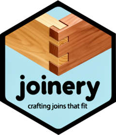

joinery: Heuristic Index-Based Record Linkage in R
Source:R/joinery-package.R
joinery-package.RdIndex-based heuristic record linkage for R.
Package options
joinery reads a small number of global options. Set them with
options(); all have working defaults, so you only touch them to change
behaviour.
Embedding strategies embed each record once and reuse the vector on later calls, so a multi-stage run does not pay the (expensive) embedding cost again. Two options control that reuse:
joinery.embedding_reuseLogical, default
TRUE. WhenTRUE, the data.table and tibble backends keep a per-session cache of embedding vectors keyed by model and record content, and reuse a vector whenever the same text is embedded again. Set toFALSEto embed fresh every time, for example when benchmarking or using a non-deterministic model. (The DuckDB backend reuses through its own persistedembeddingscolumn and ignores this option.) The session cache grows as you embed more distinct records and is only released at the end of the session or byclear_embedding_cache(); call that to reclaim memory in a long-running session.joinery.embedding_cache_dirCharacter path, default unset (
NULL). When set, the embedding cache also writes each vector to this directory, so reuse survives across R sessions. When unset, the cache lives only in the current session. The cache is keyed by record content, so a changed record re-embeds on its own; clear stale files withclear_embedding_cache()(disk = TRUE).
Author
Maintainer: Eduard Brüll eduard.bruell@zew.de